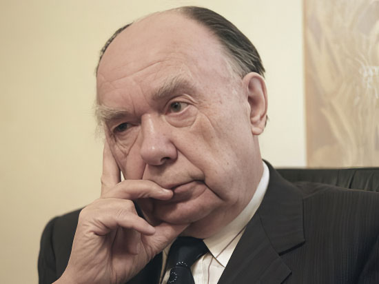

Скончался идеолог перестройки Александр Яковлев
В Москве 18 октября на 82-м году жизни скончался один из идеологов перестройки, академик Александр Яковлев. При участии Яковлева реабилитированы миллионы граждан - жертвы политических репрессий.
Свои соболезнования семье покойного выразили три президента. Владимир Путин заявил, что работа Яковлева на посту руководителя комиссии по реабилитации жертв политических репрессий помогла вернуть доброе имя тысячам людей. Первый президент РФ Борис Ельцин сказал, что Яковлев много сделал для становления демократии в современной России. А президент СССР Михаил Горбачев подчеркнул, что смерть Яковлева - это "тяжелое известие для всех, кто продолжает бороться за демократию и свободу".
Справка:
Александр Николаевич Яковлев родился 2 декабря 1923 г. в д. Королево Ярославской области.
В 1941 г. ушел на фронт и воевал до 1943 г. в составе подразделений морской пехоты.
В 1943 г. вступил в КПСС.
После окончания войны окончил исторический факультет Ярославского государственного педагогического института и поступил на работу в Ярославский обком КПСС. Там занимался журналистской деятельностью, а затем заведовал отделом школ и высших учебных заведений.
В 1953 г. начал работать в аппарате ЦК КПСС инструктором отдела школ.
1956-1959 гг. - учился в аспирантуре на кафедре международного коммунистического и рабочего движения Академии общественных наук при ЦК КПСС.
В 1958-1959 гг. проходил стажировку в Колумбийском университете в США. Вернувшись, продолжил работу в ЦК КПСС. Одновременно Яковлев защитил кандидатскую (1960), а затем докторскую (1967) диссертации. Обе работы были посвящены историографии внешнеполитических доктрин США.
В 1969 г. Яковлеву было присвоено звание профессора.
В 1972 г. опубликовал в "Литературной газете" статью "Против антиисторизма", в которой он критиковал идеологию национал-патриотов, группировавшихся вокруг литературных журналов "Октябрь" и "Молодая гвардия". По решению Секретариата и Политбюро, он был направлен послом в Канаду, где прожил 10 лет.
В Москву вернулся в 1983 г. после визита в Канаду секретаря ЦК КПСС Михаила Горбачева. Он возглавил Институт мировой экономики и международных отношений АН СССР.
В 1985 г. вновь занял должность завотделом пропаганды ЦК КПСС. По его предложению были назначены редакторы "перестроечных" изданий - "Советская культура", "Московские новости", "Известия", "Огонек", "Знамя", "Новый мир".
В 1988 г. был назначен председателем Комиссии ЦК КПСС по вопросам международной политики, что не помешало ему принимать активное участие в публикации в СССР произведений Солженицына, Набокова, Рыбакова, Приставкина, Дудинцева.
С марта 1990 по январь 1991 года Яковлев был членом Президентского совета СССР. А в январе 1991 г. был назначен советником по особым поручениям Президента СССР.
Находясь на этом посту, 18 апреля 1991 года он направил письмо президенту Горбачеву, в котором предупреждал об угрозе государственного переворота. 1 июля Яковлев вместе Аркадием Вольским, Анатолием Собчаком, Гавриилом Поповым, Николаем Петраковым, Эдуардом Шеварднадзе, Иваном Силаевым и Станиславом Шаталиным подписали обращение о создании Движения демократических реформ. 29 июля подал в отставку с поста советника президента, а 15 августа - за 4 дня до начала путча - Центральная Контрольная комиссия КПСС рекомендовала исключить его из партии за действия, направленные на раскол КПСС.
До последнего времени Александр Яковлев возглавлял Международный фонд "Демократия", который был учрежден в 1993 г. как благотворительная, неправительственная и некоммерческая организация. Кроме того, Яковлев был президентом Общественного совета газеты "Культура" и сопредседателем Конгресса интеллигенции РФ, а также возглавлял Международный фонд милосердия и здоровья и Клуб "Леонардо".
За время жизни Яковлев опубликовал более 25 книг, переведенных на английский, японский, китайский, французский, немецкий, испанский и другие языки. Среди них - "От Трумэна до Рейгана. Доктрины и реальности ядерного века" (1985 г.), "Реализм - земля перестройки" (1990 г.), "Муки прочтения бытия" (1991 г.).
После августовского путча, который Яковлев подверг жесткой критике, он практически оставил политику.
От нас ушёл один из мудрейших наших современников, и не дай нам Бог забыть его мысли, его предостережения, его спокойные, но жесткие выводы, касающиеся выживаемости нации в сегодняшней действительности:
- демократия;
- свобода;
- справедливость;
- солидарность;
- гласность;
- собственность;
- научно-технический прогресс;
- духовная эволюция...
Мне посчастливилось видеть, слышать и немножко беседовать с Александром Николаевичем.
Очень точно выразил наши чувства Михаил Горбачев, сказав, что смерть Яковлева - это "тяжелое известие для всех, кто продолжает бороться за демократию и свободу" для граждан России.
Б.Майоров